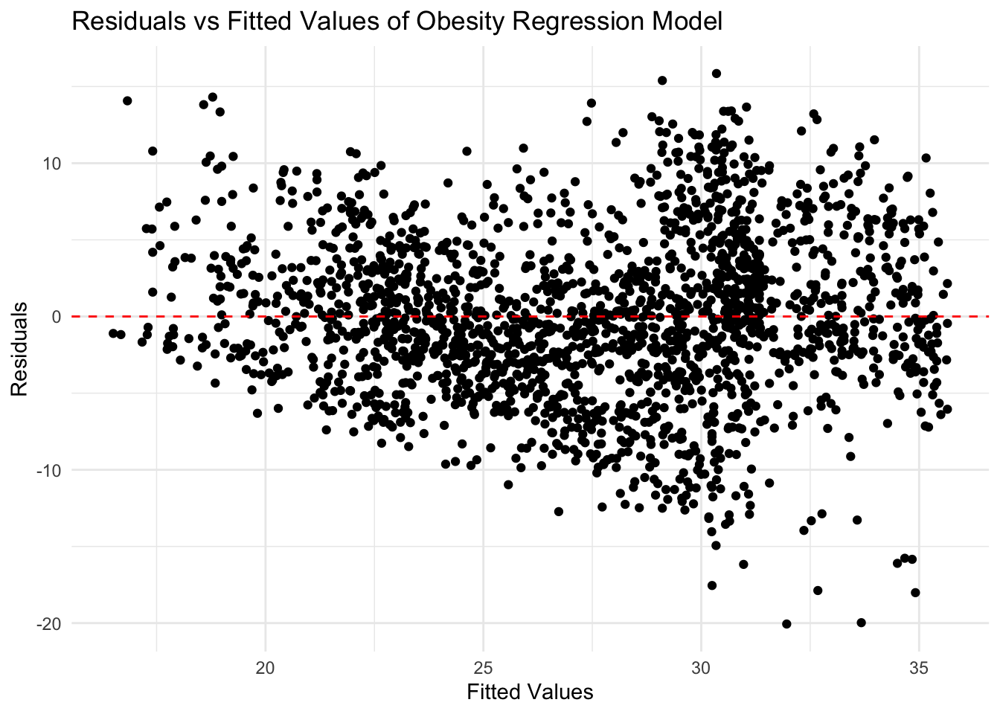
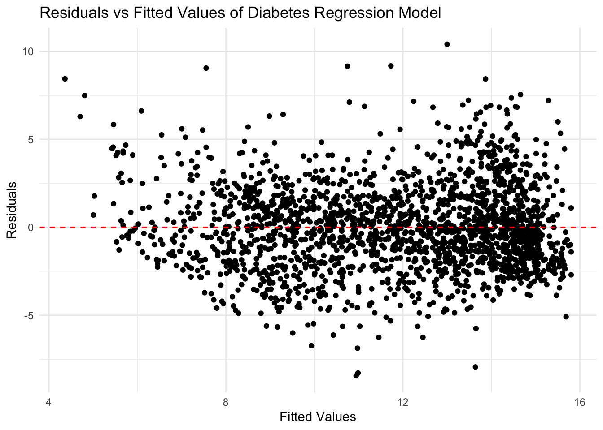

>>>>>>> 2447981d258ac6f314bd32f7793b85aa82a33752
import the datasets and packages
Desciptive Characteristics based on redlining grades
redlining_quartile=
final_analysis |>
group_by(red_grade) |>
summarise(
avg_snap = mean(ph_snap, na.rm = TRUE),
sd_snap = sd(ph_snap, na.rm = TRUE),
avg_poverty = mean(ph_below_poverty, na.rm = TRUE),
sd_poverty = sd(ph_below_poverty, na.rm = TRUE),
avg_disability = mean(ph_disability, na.rm = TRUE),
sd_disability = sd(ph_disability, na.rm = TRUE),
avg_white = mean(ph_white, na.rm = TRUE),
sd_white = sd(ph_white, na.rm = TRUE),
avg_black = mean(ph_black, na.rm = TRUE),
sd_black = sd(ph_black, na.rm = TRUE),
avg_asian = mean(ph_asian, na.rm = TRUE),
sd_asian = sd(ph_asian, na.rm = TRUE),
avg_otherrace = mean(ph_other_race, na.rm = TRUE),
sd_otherrace = sd(ph_other_race, na.rm = TRUE),
avg_hispanic = mean(ph_hispanic, na.rm = TRUE),
sd_hispanic = sd(ph_hispanic, na.rm = TRUE),
avg_nowork = mean(ph_no_work, na.rm = TRUE),
sd_nowork = sd(ph_no_work, na.rm = TRUE),
avg_1work = mean(ph_1_work, na.rm = TRUE),
sd_1work = sd(ph_1_work, na.rm = TRUE),
avg_2work = mean(ph_2_work, na.rm = TRUE),
sd_2work = sd(ph_2_work, na.rm = TRUE),
avg_obesity = mean(obesity, na.rm = TRUE),
sd_obesity = sd(obesity, na.rm = TRUE),
avg_highchol = mean(highchol, na.rm = TRUE),
sd_highchol = sd(highchol, na.rm = TRUE),
avg_diabetes = mean(diabetes, na.rm = TRUE),
sd_diabetes = sd(diabetes, na.rm = TRUE)
)|> pivot_longer(
cols = -red_grade,
names_to = c("stat", "variable"),
names_sep = "_"
)|>
pivot_wider(
names_from = c(red_grade, stat),
values_from = value,
names_glue = "{red_grade}_{stat}"
)
redlining_quartile|>
knitr::kable(digits = 2)
| snap |
5.72 |
6.95 |
17.25 |
13.61 |
18.63 |
13.40 |
23.69 |
17.85 |
| poverty |
7.58 |
6.03 |
14.18 |
8.67 |
15.56 |
10.41 |
20.56 |
13.11 |
| disability |
19.56 |
8.20 |
23.13 |
8.85 |
24.37 |
9.72 |
23.86 |
11.45 |
| white |
74.51 |
23.05 |
46.19 |
28.67 |
36.94 |
27.73 |
36.87 |
28.20 |
| black |
6.48 |
14.06 |
23.18 |
28.43 |
22.46 |
27.85 |
29.81 |
27.75 |
| asian |
8.45 |
7.09 |
11.82 |
13.31 |
16.68 |
18.27 |
9.95 |
13.31 |
| otherrace |
10.56 |
9.86 |
18.81 |
17.89 |
23.92 |
16.65 |
23.36 |
17.18 |
| hispanic |
12.72 |
12.03 |
21.39 |
22.91 |
27.21 |
21.05 |
28.42 |
23.08 |
| nowork |
17.45 |
7.60 |
12.46 |
7.18 |
12.22 |
7.23 |
14.00 |
10.12 |
| 1work |
31.11 |
9.24 |
32.87 |
9.70 |
32.61 |
10.13 |
34.33 |
12.26 |
| 2work |
51.46 |
12.88 |
54.67 |
10.61 |
55.17 |
11.89 |
51.67 |
15.78 |
| obesity |
20.74 |
5.61 |
25.92 |
6.18 |
27.51 |
6.37 |
28.71 |
7.61 |
| highchol |
37.27 |
3.24 |
34.50 |
3.30 |
34.14 |
3.05 |
32.29 |
4.20 |
| diabetes |
9.25 |
2.48 |
11.11 |
2.91 |
12.36 |
2.92 |
11.58 |
4.42 |
final_analysis |>
group_by(red_grade)|>
summarise(count = n())|>
knitr::kable()
Comparing census tracts with HRS in the first and fourth
quartile
q1_vs_q4 =
final_analysis|>
filter(red_grade %in%c("A","D"))
q1q4_desc =
q1_vs_q4|>
group_by(red_grade)|>
summarise(
ph_snap = mean(ph_snap),
ph_below_poverty = mean(ph_below_poverty),
ph_disability = mean(ph_disability),
minority = mean(minority),
obesity = mean(obesity),
highchol = mean(highchol),
diabetes = mean(diabetes)
)|>
pivot_longer(cols = -red_grade, names_to = "variable", values_to = "value")|>
pivot_wider(names_from = red_grade, names_prefix = "grade_", values_from = value)|>
mutate(
mean_diff = grade_D - grade_A,
)|>
rename(outcome = variable)
uni_reg = function(dataset, outcomes, predictor) {
results = list()
for (outcome in outcomes) {
formula = as.formula(paste(outcome, "~", predictor))
model= lm(
formula,
data = dataset
)
results[[outcome]] = broom::tidy(model)
}
combined_results = bind_rows(results, .id = "outcome")
return(combined_results)
}
outcomes = c("ph_snap","ph_below_poverty", "ph_disability", "minority", "obesity", "highchol", "diabetes")
uni_reg(q1_vs_q4, outcomes, "red_grade")|>
filter(term != "(Intercept)")|>
right_join(q1q4_desc, by="outcome")|>
select(outcome, grade_A, grade_D, mean_diff, p.value)|>
knitr::kable(digits = 3)
| ph_snap |
5.722 |
23.695 |
17.972 |
0.000 |
| ph_below_poverty |
7.581 |
20.559 |
12.978 |
0.000 |
| ph_disability |
19.556 |
23.863 |
4.307 |
0.026 |
| minority |
25.494 |
63.126 |
37.632 |
0.000 |
| obesity |
20.736 |
28.710 |
7.974 |
0.000 |
| highchol |
37.275 |
32.286 |
-4.989 |
0.000 |
| diabetes |
9.247 |
11.584 |
2.337 |
0.002 |
regression analysis for hrs and the relevant variables
# univariate analysis
lm(ph_snap~red_grade,final_analysis)|>
broom::tidy()
## # A tibble: 4 × 5
## term estimate std.error statistic p.value
## <chr> <dbl> <dbl> <dbl> <dbl>
## 1 (Intercept) 5.72 2.48 2.30 2.14e- 2
## 2 red_gradeB 11.5 2.61 4.42 1.04e- 5
## 3 red_gradeC 12.9 2.53 5.10 3.65e- 7
## 4 red_gradeD 18.0 2.55 7.04 2.62e-12
## multivariate model 1
lm(ph_snap~red_grade+minority+ph_disability,final_analysis)|>
broom::tidy()|>
knitr::kable(digits = 3)
| (Intercept) |
-11.575 |
2.004 |
-5.776 |
0.000 |
| red_gradeB |
4.778 |
2.053 |
2.327 |
0.020 |
| red_gradeC |
3.904 |
2.005 |
1.948 |
0.052 |
| red_gradeD |
9.313 |
2.024 |
4.602 |
0.000 |
| minority |
0.151 |
0.010 |
15.386 |
0.000 |
| ph_disability |
0.687 |
0.027 |
25.294 |
0.000 |
##multivariate model 2
lm(ph_snap~red_grade+ph_disability+ph_white+ph_black+ph_asian+ph_1_work+ph_2_work,final_analysis)|>
broom::tidy()|>
knitr::kable(digits = 3)
| (Intercept) |
42.463 |
3.602 |
11.789 |
0.000 |
| red_gradeB |
6.636 |
1.832 |
3.622 |
0.000 |
| red_gradeC |
5.801 |
1.794 |
3.233 |
0.001 |
| red_gradeD |
9.792 |
1.802 |
5.434 |
0.000 |
| ph_disability |
0.438 |
0.027 |
16.170 |
0.000 |
| ph_white |
-0.326 |
0.015 |
-21.816 |
0.000 |
| ph_black |
-0.234 |
0.016 |
-14.755 |
0.000 |
| ph_asian |
-0.279 |
0.020 |
-13.848 |
0.000 |
| ph_1_work |
-0.011 |
0.035 |
-0.314 |
0.754 |
| ph_2_work |
-0.326 |
0.030 |
-10.891 |
0.000 |
<<<<<<< HEAD
Statistical Analysis of Obesity
Does the relationship between redlining and health outcomes depend
on minority percentage?
uni_ob = lm(obesity ~ red_grade, data = final_analysis)
uni_ob|> broom::tidy() |> knitr::kable(digits = 3)
| (Intercept) |
20.736 |
1.124 |
18.444 |
0 |
| red_gradeB |
5.187 |
1.180 |
4.394 |
0 |
| red_gradeC |
6.770 |
1.144 |
5.917 |
0 |
| red_gradeD |
7.974 |
1.155 |
6.901 |
0 |
mul_ob = lm(obesity ~ red_grade + minority, data = final_analysis)
mul_ob |> broom::tidy() |> knitr::kable(digits = 3)
| (Intercept) |
17.122 |
0.917 |
18.682 |
0.000 |
| red_gradeB |
1.173 |
0.963 |
1.218 |
0.224 |
| red_gradeC |
1.446 |
0.940 |
1.538 |
0.124 |
| red_gradeD |
2.639 |
0.949 |
2.781 |
0.005 |
| minority |
0.142 |
0.004 |
32.717 |
0.000 |
int_ob = lm(obesity ~ red_grade + minority + red_grade * minority, data = final_analysis)
int_ob |> broom::tidy() |> knitr::kable(digits = 3)
| (Intercept) |
15.764 |
1.341 |
11.752 |
0.000 |
| red_gradeB |
1.646 |
1.473 |
1.118 |
0.264 |
| red_gradeC |
5.209 |
1.406 |
3.706 |
0.000 |
| red_gradeD |
1.066 |
1.438 |
0.741 |
0.459 |
| minority |
0.195 |
0.039 |
4.965 |
0.000 |
| red_gradeB:minority |
-0.037 |
0.041 |
-0.909 |
0.364 |
| red_gradeC:minority |
-0.091 |
0.040 |
-2.300 |
0.022 |
| red_gradeD:minority |
-0.007 |
0.040 |
-0.171 |
0.864 |
uni_dia = lm(diabetes ~ red_grade, data = final_analysis)
uni_dia |> broom::tidy() |> knitr::kable(digits = 3)
| (Intercept) |
9.247 |
0.576 |
16.048 |
0.000 |
| red_gradeB |
1.866 |
0.605 |
3.085 |
0.002 |
| red_gradeC |
3.108 |
0.586 |
5.299 |
0.000 |
| red_gradeD |
2.337 |
0.592 |
3.947 |
0.000 |
mul_dia = lm(diabetes ~ red_grade + minority, data = final_analysis)
mul_dia |> broom::tidy() |> knitr::kable(digits = 3)
| (Intercept) |
7.027 |
0.412 |
17.054 |
0.000 |
| red_gradeB |
-0.600 |
0.433 |
-1.385 |
0.166 |
| red_gradeC |
-0.163 |
0.423 |
-0.386 |
0.700 |
| red_gradeD |
-0.940 |
0.427 |
-2.202 |
0.028 |
| minority |
0.087 |
0.002 |
44.701 |
0.000 |
int_dia = lm(diabetes ~ red_grade + minority + red_grade * minority, data = final_analysis)
int_dia |> broom::tidy() |> knitr::kable(digits = 3)
| (Intercept) |
7.075 |
0.601 |
11.777 |
0.000 |
| red_gradeB |
-0.094 |
0.660 |
-0.142 |
0.887 |
| red_gradeC |
0.683 |
0.630 |
1.085 |
0.278 |
| red_gradeD |
-2.712 |
0.644 |
-4.211 |
0.000 |
| minority |
0.085 |
0.018 |
4.844 |
0.000 |
| red_gradeB:minority |
-0.008 |
0.018 |
-0.463 |
0.643 |
| red_gradeC:minority |
-0.012 |
0.018 |
-0.691 |
0.490 |
| red_gradeD:minority |
0.029 |
0.018 |
1.630 |
0.103 |
Model Comparisons
AIC(uni_ob, mul_ob, int_ob)
## df AIC
## uni_ob 5 13537.07
## mul_ob 6 12677.42
## int_ob 9 12602.76
models_ob = list(Univariate = uni_ob, Multivariate = mul_ob, Interaction = int_ob)
sapply(models_ob, function(model) summary(model)$adj.r.squared)
## Univariate Multivariate Interaction
## 0.03471427 0.36787495 0.39156456
AIC(uni_dia, mul_dia, int_dia)
## df AIC
## uni_dia 5 10819.141
## mul_dia 6 9426.990
## int_dia 9 9336.586
models_dia = list(Univariate = uni_dia, Multivariate = mul_dia, Interaction = int_dia)
sapply(models_dia, function(model) summary(model)$adj.r.squared)
## Univariate Multivariate Interaction
## 0.02801253 0.51016168 0.53215532
Logistic Regression
final_analysis <- final_analysis |>
mutate(high_obesity = ifelse(obesity > 30, 1, 0),
high_diabetes = ifelse(diabetes > 10, 1, 0))
glm(high_obesity ~ red_grade + minority, data = final_analysis, family = binomial) |>
broom::tidy() |>
mutate(odds_ratio = exp(estimate)) |>
select(term, estimate, odds_ratio, statistic, std.error, p.value) |>
knitr::kable(digits = 3)
| (Intercept) |
-4.937 |
0.007 |
-6.333 |
0.780 |
0.000 |
| red_gradeB |
-0.875 |
0.417 |
-1.112 |
0.787 |
0.266 |
| red_gradeC |
-1.112 |
0.329 |
-1.428 |
0.779 |
0.153 |
| red_gradeD |
-0.409 |
0.664 |
-0.525 |
0.779 |
0.599 |
| minority |
0.074 |
1.077 |
21.430 |
0.003 |
0.000 |
glm(high_diabetes ~ red_grade + minority, data = final_analysis, family = binomial) |>
broom::tidy() |>
mutate(odds_ratio = exp(estimate)) |>
select(term, estimate, odds_ratio, statistic, std.error, p.value) |>
knitr::kable(digits = 3)
| (Intercept) |
-2.696 |
0.067 |
-6.092 |
0.443 |
0.000 |
| red_gradeB |
-0.265 |
0.768 |
-0.571 |
0.463 |
0.568 |
| red_gradeC |
0.689 |
1.993 |
1.534 |
0.450 |
0.125 |
| red_gradeD |
-0.922 |
0.398 |
-1.997 |
0.461 |
0.046 |
| minority |
0.071 |
1.074 |
22.288 |
0.003 |
0.000 |
residual plots
library(ggplot2)
ob_residual = data.frame(
fitted = fitted(int_ob),
residuals = residuals(int_ob)
)
ob_residual |>
ggplot(aes(x = fitted, y = residuals)) +
geom_point() +
geom_hline(yintercept = 0, linetype = "dashed", color = "red") +
theme_minimal() +
labs(
title = "Residuals vs Fitted Values of Obesity Regression Model",
x = "Fitted Values",
y = "Residuals"
)

dia_residual = data.frame(
fitted = fitted(int_dia),
residuals = residuals(int_dia)
)
dia_residual |>
ggplot(aes(x = fitted, y = residuals)) +
geom_point() +
geom_hline(yintercept = 0, linetype = "dashed", color = "red") +
theme_minimal() +
labs(
title = "Residuals vs Fitted Values of Diabetes Regression Model",
x = "Fitted Values",
y = "Residuals"
)

=======